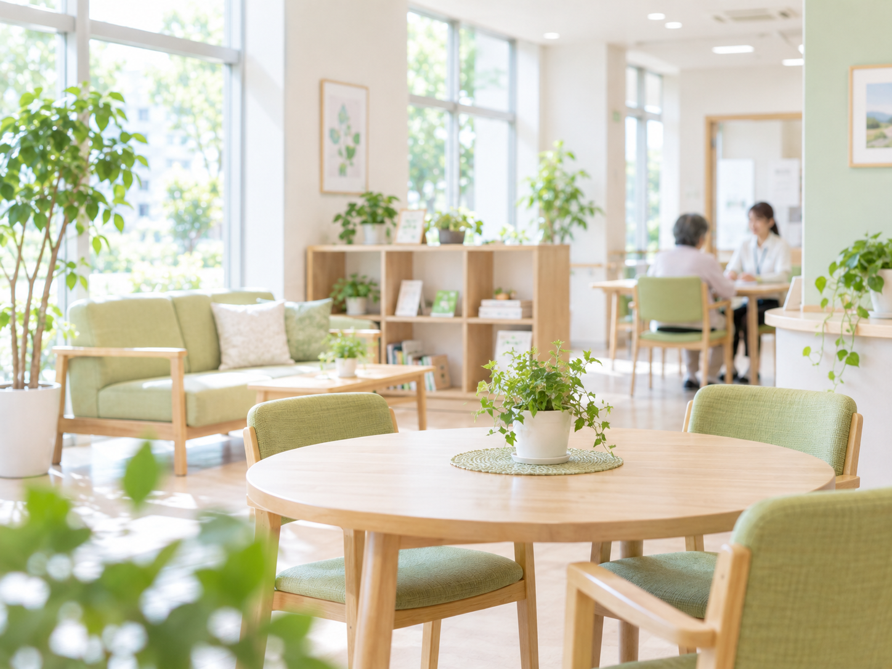

障害福祉事業所のホームページにおけるお知らせ欄の活用法：更新の負担を減らして最新情報を届けるコツ

障害福祉事業所のホームページを立ち上げたものの、日々の忙しさからお知らせ欄の更新が徐々に滞ってしまうという課題は、多くの管理者や広報担当者から耳にする悩みです。事業所内での支援や利用者の送迎、事務作業に追われる中で、ブログ記事のような長文を書く時間を確保することは容易ではありません。しかし、お知らせ欄の更新が長く途絶えてしまうと、ホームページを訪れた利用検討者やご家族は「現在も活発に活動しているだろうか」「問い合わせても大丈夫だろうか」と不安になってしまいます。今回は、更新の心理的負担を大きく減らしながら、見学希望者や関係機関に安心感を届けるための実務的なお知らせ運用のコツについて考えてみます。
障害福祉事業所のホームページでお知らせが止まってしまう理由
お知らせの更新が途絶えてしまう背景には、多くの場合「何をどれくらいの長さで書くべきか」というハードルを高く設定しすぎてしまっている事情があります。広報担当者の中には、「せっかく書くならイベントの様子を詳しくレポートしなければならない」「専門的な支援の取り組みを発信しなければならない」といったプレッシャーを感じている方が少なくありません。しかし、利用検討者やご家族がホームページのお知らせ欄に求めている情報は、必ずしも凝った読み物ではありません。事業所が現在も元気に運営されており、安全にサービスを提供しているという「現在の姿」が伝わるだけでも十分な役割を果たしています。まずは、文章を長く書かなければならないという思い込みを手放すことが、負担を減らす第一歩となります。
無理なく続けられる定型パターンの活用
更新の負担を劇的に軽くするための有効なアプローチが、あらかじめ掲載する内容のパターンを型として決めておくことです。ゼロから文章を考えようとすると時間がかかりますが、いくつかの決まったフォーマットを用意しておけば、空いた時間に数分で入力できるようになります。例えば、以下のような定型的な話題はお知らせ欄のネタとして無理なく活用できます。
- 季節の行事や作業の様子についての短いご報告
- 見学や体験の受け入れ状況に関するご案内
- 祝日や年末年始などにおける営業日の変更お知らせ
- スタッフの勉強会参加や事業所の小さな出来事
こうした定型文をベースに、日付と一言のコメントを添えるだけで立派なお知らせになります。特別なイベントがない月であっても、「今月はこのような作業に取り組みました」と短い報告を一つ挟むだけで、ページの鮮度が保たれます。

最低限キープすべき更新頻度の目安と心構え
「毎日更新しなければならない」「毎週必ず新しい記事を出さなければならない」といった高い目標は、かえって担当者の心を疲れさせてしまいます。障害福祉事業所のホームページにおけるお知らせ欄は、商業サイトのように毎日情報を発信する必要はありません。現実的な目安として、月に1回から2回程度のペースをコンスタントに維持できていれば十分です。大切なのは、更新回数の多さではなく、最後の更新日から半年以上が経過しているような「放置された状態」を作らないことにあります。もし忙しくて手が回らない時期が続く場合は、数ヶ月先の営業カレンダーをあらかじめ掲載しておくなど、手間をかけずに最新の状況が伝わる工夫を取り入れるのも実務的な知恵です。
まとめ：担当者が無理なく続けられる運営体制へ
ホームページのお知らせ欄は、事業所の現在の温かい雰囲気を伝える大切な窓口です。完璧な記事を頻繁に書こうとするのではなく、定型化されたパターンを用意し、必要最低限のペースを無理なく守ることこそが、結果として最も信頼されるホームページ運営につながります。日々の支援の中で見つけた小さな出来事を、そのまま素直な言葉で綴ることから始めてみてはいかがでしょうか。